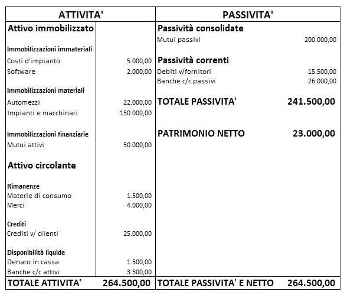

Prerequisiti
Prima di iniziare ripassa bene l'aspetto finanziario della gestione (finanziamenti ottenuti, finanziamenti interni ed esterni, autofinanziamento, finanziamenti a titolo di capitale proprio e a titolo di capitale di debito).
Prima di iniziare ripassa bene l'aspetto finanziario della gestione (finanziamenti ottenuti, finanziamenti interni ed esterni, autofinanziamento, finanziamenti a titolo di capitale proprio e a titolo di capitale di debito).

Patrimonio
Patrimonio di funzionamento
Situazione patrimoniale
Attività e Passività
Patrimonio netto
Attivo immobilizzato e attivo circolante
Passivo consolidato e passivo corrente
Impieghi e finanziamenti
Il test è basato sulle flashcard e per utilizzarne a pieno le potenzialità è richiesta l'iscrizione al sito quizlet.com
Indica (a voce) se gli elementi fanno parte della situazione economica o della situazione patrimoniale, poi clicca sulla flashcard per controllare.
Ricorda:
SP = Situazione Patrimoniale
SE = Situazione Economica
Utilizzando i seguenti elementi, costituisci la situazione patrimoniale (SP, composta dagli impieghi e dalle fonti di finanziamento) dell'impresa e calcola il patrimonio netto.
| Costi d'impianto | 5.000,00 |
| Materie di consumo | 1.500,00 |
| Automezzi | 22.000,00 |
| Debiti v/fornitori | 15.500,00 |
| Merci | 4.000,00 |
| Crediti v/ clienti | 25.000,00 |
| Mutui attivi | 50.000,00 |
| Denaro in cassa | 1.500,00 |
| Mutui passivi | 200.000,00 |
| Banche c/c attivi | 3.500,00 |
| Banche c/c passivi | 26.000,00 |
| Software | 2.000,00 |
| Impianti e macchinari | 150.000,00 |

1) Come si calcola il patrimonio netto?
2) Spiega i "termini tecnici importanti" riportati sopra.
Questo articolo è sotto la licenza Licenza Creative Commons Attribution Share Alike 4.0